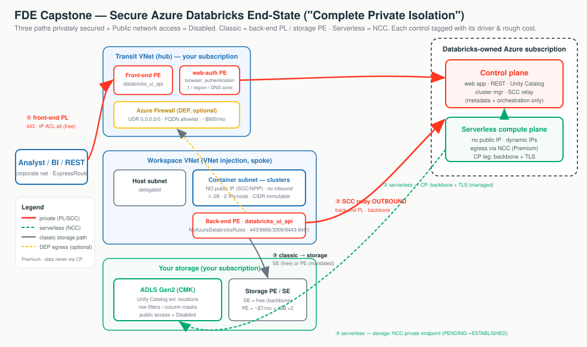

This capstone turns everything from Stages 1–9 into three field skills: 11.1 design and trace a secure deployment hop-by-hop; 11.2 give crisp answers that survive the follow-up probe; 11.3 justify each control against a driver and put real Azure dollars on it. The map underneath all three is the same: three connectivity paths, two compute planes.
You are a security guard walking a VIP from the street to the vault — then the doctor who decides which locks are worth the money. Three doors: ① user → workspace, ② compute → control plane, ③ compute → storage/egress. Classic lives in your VNet (SCC + back-end PL + storage PE); serverless lives in Databricks' account (NCC; CP leg is always backbone TLS). Every control must trace to a driver — no driver, the cheaper default wins.
| Path | Classic (your VNet) | Serverless (Databricks account) | Strongest |
|---|---|---|---|
| ① User → workspace | IP access list → front-end PL | Same front door (shared CP) | Front-end PL + public access Disabled |
| ② Compute → control plane | SCC relay → back-end PL | Backbone TLS (managed) | Back-end Private Link |
| ③ Compute → storage | Service / Private Endpoint | NCC service-tag firewall / PE | Private Endpoint + storage public access Disabled |

"We secure all three paths privately and set Public network access = Disabled. Classic uses SCC + back-end Private Link; serverless uses NCC; the data never traverses the control plane and you hold the encryption keys. And I'll tell you which of these you don't need to pay for."
databricks_ui_api) for compute→CP and user→workspace; web-auth = SSO callback. → Stage 6The classic senior-interview / security-workshop exercise: design a secure deployment and walk a query from the analyst's browser to data in ADLS, naming the control at every hop. Switch the diagram between the regulated bank (classic), healthcare (serverless-first), and the cost-conscious DEP walk-throughs; click any box for the "what + why."
Securing all three paths privately and setting Public network access = Disabled is Microsoft's "Complete private isolation" — front-end + back-end + web-auth Private Link + NCC for any serverless. Prereqs: Premium + VNet injection + SCC.
| Hop | Control | What it does |
|---|---|---|
| Foundation | VNet injection | Workspace in your VNet (host + container subnets) — the only way to attach back-end PL, NSGs, UDRs, storage PE |
| ② baseline | SCC / No Public IP | Cluster dials outbound to the SCC relay; no public IP, no inbound ports |
| ② | Back-end PL (databricks_ui_api) | Compute→CP on a private IP; NoAzureDatabricksRules; ports 443/6666/3306/8443-8451 |
| ① | Front-end PL + web-auth | User→workspace private; browser_authentication PE makes Entra ID SSO work (1 per region/DNS zone) |
| glue | Private DNS | privatelink.azuredatabricks.net resolves the FQDN to the private IP — the #1 break |
| ③ serverless | NCC private endpoint | Serverless→ADLS privately (PENDING→ESTABLISHED); 10/region, 100 PE/region, 50 ws/NCC |
| ③ classic | Service / Private Endpoint | Storage firewall by subnet (free) or a private IP (per-GB, on-prem reach) |
| at rest | CMK + Unity Catalog + audit | Customer key; grants/masks above the network; system.access.audit evidence |
Terraform (azurerm). Full multi-file IaC (PEs, DNS, firewall) is the Stage 3–8 hands-on artifact.
resource "azurerm_databricks_workspace" "bank" {
sku = "premium" # PL/CMK/UC binding need Premium
public_network_access_enabled = false # "complete private isolation"
network_security_group_rules_required = "NoAzureDatabricksRules" # back-end PL: managed public rules off
custom_parameters {
no_public_ip = true # SCC / NPIP
virtual_network_id = azurerm_virtual_network.spoke.id
public_subnet_name = azurerm_subnet.host.name # "host" subnet
private_subnet_name = azurerm_subnet.container.name # "container" subnet
}
}Portal: Create → Networking → No Public IP = Yes, Deploy in your VNet = Yes, Required NSG rules =
NoAzureDatabricksRules, Public network access = Disabled → add the back-end/front-end databricks_ui_api
PEs + one browser_authentication PE → verify privatelink.azuredatabricks.net A-records.
Mixing the two planes' mechanisms. Back-end PL secures classic compute→CP; NCC secures serverless→data. They are not interchangeable. And serverless has dynamic IPs — you can't peer or pin a static IP, which is the whole reason NCC exists.
Crisp model answers that survive the follow-up probe. Switch the diagram between the three paths — the highlighted arrow is the active path; click a box for the one-line answer and the load-bearing fact (port, limit, direction).
| Question | The answer (bold = load-bearing) |
|---|---|
| Trace the SCC call | Cluster dials outbound to the SCC relay over 443, holds it open; CP replies down that tunnel — never dials in. Default in ARM 2024-05-01+. |
| SCC vs Private Link | SCC removes inbound + node public IPs; the CP hop stays public-on-backbone until back-end PL makes it a private IP. PL lets you set public access = Disabled. |
| What's web-auth? | browser_authentication PE for the Entra ID SSO callback — one per region per DNS zone; REST auth unaffected. |
| Ports on the PE subnet NSG | 443, 6666, 3306, 8443–8451 inbound. |
| Serverless → private ADLS? | NCC private endpoint (PENDING→ESTABLISHED); can't whitelist serverless IPs — they're dynamic. Limits: 10/region, 100 PE/region, 50 ws/NCC. |
| Size the subnets | VNet /16–/24; two equal subnets ≥ /26; 2 IPs/node, 5 reserved; CIDR immutable after deploy. |
| SE vs PE | SE = free, subnet trust, storage keeps a public IP; PE = private IP/NIC, DNS change, per-GB both ways, on-prem reach. |
Most front-end PL failures are DNS. First move on any "can't reach workspace / OAuth denied":
nslookup the workspace FQDN from the client subnet and confirm it returns the private
PE IP in privatelink.azuredatabricks.net, not the public one.
# Account-level, regional. Storage owner APPROVES in the portal: PENDING -> ESTABLISHED.
databricks account network-connectivity create-private-endpoint-rule "$NCC_ID" --json '{
"resource_id": "/subscriptions/<sub>/resourceGroups/<rg>/providers/Microsoft.Storage/storageAccounts/<acct>",
"group_id": "dfs"
}'
# Then attach the NCC to the workspace, set storage Public network access = Disabled, restart serverless."Just whitelist the serverless IPs" (they're dynamic — it's NCC). "SCC makes traffic private" (it removes inbound; back-end PL privatizes the hop). "Route SCC through the firewall" (needless hop/latency). "Private Link is free because endpoints are cheap" (per-GB on hot paths bites).
Every control must trace to a driver; no driver → over-build. Switch the diagram between the cheaper baseline and the hardened / mandated design — the labels carry the rough Azure cost on each control. Click any box for the driver and the price.
Service Endpoint = free · NAT Gateway = ~$32/mo flat · Private Endpoint = ~$7/mo to exist + ~$0.01/GB both ways (a TB/day path ≈ ~$300/mo just for the PL premium) · Azure Firewall = ~$900/mo flat + $0.016/GB (double it for HA). The Firewall is the cliff — reserve it for a genuine exfiltration mandate.
| Control | Driver that justifies it | No driver → cheaper default |
|---|---|---|
| VNet injection + SCC | Any prod workspace; own NSGs/UDRs/egress | (baseline; managed VNet for POCs) |
| Back-end Private Link | "No internal traffic on the public internet" | SCC alone (outbound TLS on backbone) |
| Front-end Private Link | "UI only reachable from our network" | IP access lists + Conditional Access |
| Private Endpoint to ADLS | Private-only storage / regulated data | Service Endpoint + storage firewall (free) |
| Azure Firewall + UDR (DEP) | Explicit FQDN egress allowlist / exfil mandate | NSG egress + NAT Gateway |
| CMK (Key Vault) | Customer must hold/rotate keys | Microsoft-managed keys (default, free) |
"We're adding [control] because you told us [driver]. It costs [rough number] and adds [latency/ops]. If [driver] weren't a hard requirement, I'd recommend [cheaper default] instead."
-- Show a customer their ACTUAL serverless networking spend, not a guess.
SELECT u.usage_date, u.sku_name,
SUM(u.usage_quantity) AS qty,
SUM(u.usage_quantity * p.pricing.default) AS approx_usd
FROM system.billing.usage u
JOIN system.billing.list_prices p
ON u.sku_name = p.sku_name
AND u.usage_end_time BETWEEN p.price_start_time AND COALESCE(p.price_end_time, current_timestamp())
WHERE u.sku_name ILIKE '%NETWORK%' -- networking-related SKUs
AND u.usage_date >= current_date() - INTERVAL 30 DAYS
GROUP BY u.usage_date, u.sku_name ORDER BY u.usage_date DESC;Who pays: classic = you pay Azure directly; serverless = Databricks meters it and passes it through (billing system table). Serverless Private Connectivity /GB is waived until further notice; the /hour endpoint fee still bills.
Baseline first, harden on a driver. VNet injection + SCC + NAT + service-endpoint storage firewall is cheap and private-enough for most. Add back-end PL + PE-to-ADLS only on a no-public-internet mandate; add the Azure Firewall (DEP) only on an explicit FQDN-allowlist requirement. Confirm Premium first; price in Azure's terms ("approximately — here's the live pricing page").
| Customer asks… | Architect answers… |
|---|---|
| "Prove no traffic ever hits the public internet." | In complete isolation — front-end + back-end PL + NCC + public access Disabled. Walk it hop-by-hop with the doc behind each claim. |
| "How does serverless reach our private ADLS?" | NCC private endpoints; you can't peer to serverless (dynamic IPs) — that's why NCC exists. |
| "Who holds the encryption keys?" | You do — CMK via your Azure Key Vault (Premium). |
| "This looks expensive — what's driving it?" | Azure Firewall ~$900/mo flat is the cliff; Private Endpoint per-GB on hot data paths is the sleeper. Usually one line item, not "Databricks is expensive." |
| "Can we drop the firewall / PEs and stay secure?" | Yes if there's no regulatory driver — pivot to service endpoints / NSG egress. |
| "What do we need Premium for?" | All Private Link, IP access lists, CMK, CSP. Confirm the plan before scoping. |
Workspace URL resolves to the public IP, not the private endpoint.First check: nslookup the FQDN from the client subnet — is the zone linked / forwarding correct?
Back-end PL / SCC relay path misconfig.First check: back-end PE + NSG NoAzureDatabricksRules.
The single web-auth host workspace was deleted.First check: browser_authentication host workspace exists + PE healthy.
NCC PE still PENDING, or storage went Disabled before approval.First check: NCC PE = ESTABLISHED, attached to the workspace.
Container subnet exhausted at peak.First check: free IPs vs peak nodes minus 5 reserved (not a quota issue).
One control is the driver.First check: system.billing.usage networking SKUs — usually a Firewall or high-volume PE path.
Workspace is on Standard.First check: pricing tier — Private Link / CMK / IP ACLs are Premium-only.
SCC / storage egress forced through the firewall.First check: is the relay going direct via NAT, not the firewall hop?